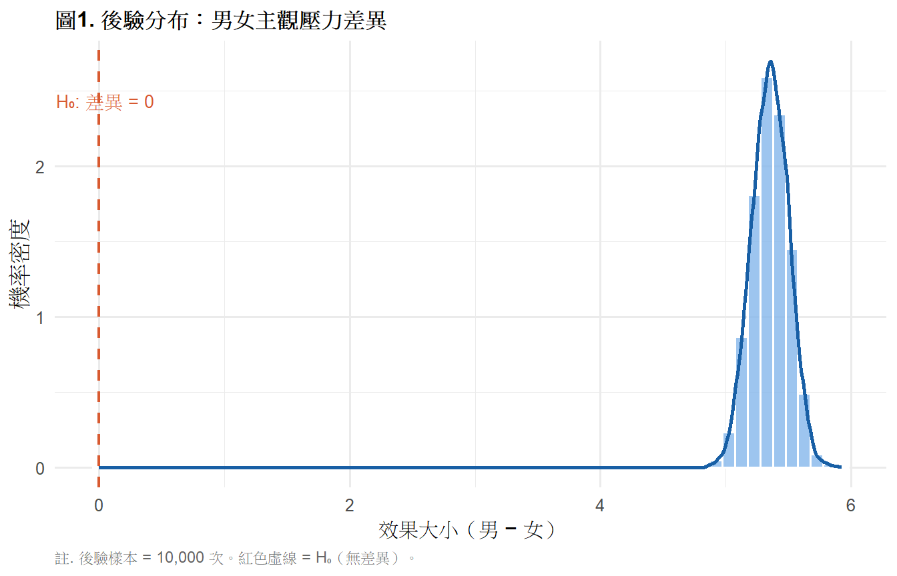
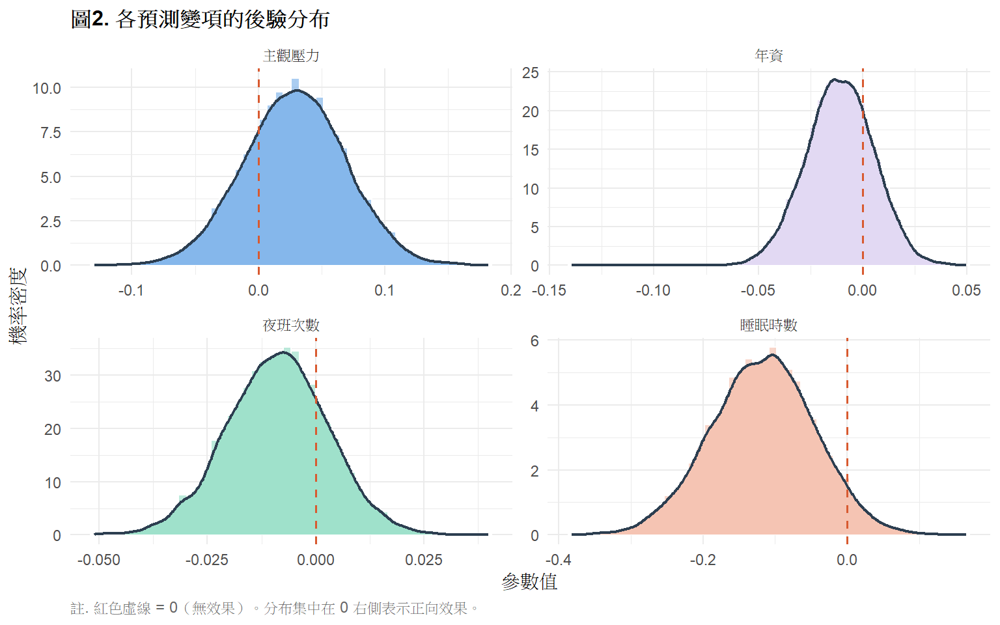

library(tidyverse)
library(gt)
library(BayesFactor)
library(bayestestR)
# install.packages("BayesFactor")
# install.packages("bayestestR")
set.seed(2025)
ems <- read.csv("data/ems_main.csv",
stringsAsFactors = FALSE)
ems$gender <- factor(ems$gender,
levels = c("男", "女"))
ems$level <- factor(ems$level,
levels = c("EMT-1", "EMT-2", "EMT-P"))
ems$district <- factor(ems$district,
levels = c("北部", "中部", "南部", "東部"))
ems$shift <- factor(ems$shift,
levels = c("日班為主", "夜班為主", "輪班"))進階主題2：貝氏推論
貝氏思維、先驗與後驗、貝氏 t 檢定、貝氏線性回歸、EMS 應用
學習目標
- 理解貝氏推論與頻率學派的根本差異
- 掌握先驗、概似、後驗的直觀意義
- 執行貝氏 t 檢定並詮釋貝氏因子（BF）
- 執行貝氏線性回歸並解讀後驗分布
為什麼要學貝氏推論？
頻率學派的困境
你做了一個 t 檢定，得到 p = .03。 很多人會說「有 3% 的機率 H₀ 是對的」—— 但這是錯的。
p 值的正確意義是： 假設 H₀ 為真，觀察到這樣或更極端結果的機率。
它不能回答「H₀ 是真的的機率是多少」這個問題。
重要
頻率學派 vs 貝氏學派的根本差異
| 頻率學派 | 貝氏學派 | |
|---|---|---|
| 機率的定義 | 長期重複實驗的頻率 | 對事件的信念程度 |
| 參數 | 固定但未知的常數 | 有機率分布的隨機變數 |
| 推論目標 | 拒絕或不拒絕 H₀ | 更新對參數的信念 |
| 核心輸出 | p 值 | 後驗分布 |
| 能回答的問題 | 「資料有多極端？」 | 「H₁ 相對 H₀ 有多可能？」 |
貝氏推論能直接回答：
- 「ALS 比 BLS 有效的機率是多少？」
- 「效果大於 0.5 的機率是多少？」
- 「在現有資料下，哪個假設更可信？」
一、統計理論
1.1 貝氏定理
\[P(\theta | \text{data}) = \frac{P(\text{data} | \theta) \cdot P(\theta)}{P(\text{data})}\]
用文字說：
\[\underbrace{P(\theta | \text{data})}_{\text{後驗}} \propto \underbrace{P(\text{data} | \theta)}_{\text{概似}} \times \underbrace{P(\theta)}_{\text{先驗}}\]
三個核心概念：
先驗（Prior）： 在看到資料之前，你對參數的信念。
概似（Likelihood）： 在給定參數值的情況下，觀察到這份資料的機率。
後驗（Posterior）： 看到資料之後，更新過的信念。
提示
直觀比喻：
想像你要估計 EMS 人員的平均壓力分數：
- 先驗： 根據過去文獻，大概在 5–7 分之間（你的初始信念）
- 資料： 你收集了 200 個樣本，平均 6.2 分
- 後驗： 結合先驗和資料，更新你對真實平均值的信念
資料越多，後驗越接近資料本身，先驗的影響越小。 這就是「用資料更新信念」的過程。
1.2 先驗的選擇
| 先驗類型 | 說明 | 適用時機 |
|---|---|---|
| 無資訊先驗（Uninformative） | 對所有參數值給予相同機率 | 完全沒有先驗知識 |
| 弱資訊先驗（Weakly Informative） | 給予合理範圍，避免極端值 | 有一般領域知識 |
| 資訊先驗（Informative） | 根據文獻或專家意見設定 | 有充分的先驗研究 |
註釋
先驗的選擇是貝氏分析最重要也最受爭議的部分。
好消息是：當資料量夠大時，先驗的影響會逐漸消失， 後驗主要由資料決定。
建議做敏感度分析：用不同先驗跑模型， 確認結論是否穩定。
1.3 貝氏因子（Bayes Factor, BF）
貝氏因子是貝氏假設檢定的核心指標， 表示「資料支持 H₁ 的程度是支持 H₀ 的幾倍」：
\[BF_{10} = \frac{P(\text{data} | H_1)}{P(\text{data} | H_0)}\]
判讀標準（Jeffreys, 1961）：
| BF₁₀ | 解讀 |
|---|---|
| 1–3 | 微弱證據支持 H₁ |
| 3–10 | 中等證據支持 H₁ |
| 10–30 | 強力證據支持 H₁ |
| 30–100 | 非常強力證據支持 H₁ |
| > 100 | 極強力證據支持 H₁ |
| 1/3–1 | 微弱證據支持 H₀ |
| < 1/3 | 中等以上證據支持 H₀ |
重要
BF 與 p 值的關鍵差異：
- p = .03 只說「資料很極端」，不說 H₁ 有多可信
- BF = 15 說「資料支持 H₁ 的程度是 H₀ 的 15 倍」
BF 是連續的證據強度，不是二元的「顯著/不顯著」。
1.4 後驗分布的解讀
貝氏推論的輸出不是一個點估計，而是一個分布：
後驗分布示意：
機率
↑
| ╭──────╮
| ╭─╯ ╰─╮
| ╭─╯ ╰─╮
+────────────────────────→ 參數值
95% CI
[下界, 上界]95% 可信區間（Credible Interval）：
「給定資料，參數落在這個區間的機率是 95%」
這才是大家一直想要但頻率 CI 給不了的解讀！
二、R 實作
載入套件與資料
貝氏 t 檢定
研究問題： 男女 EMS 人員的主觀壓力（stress_vas）是否不同？
先跑頻率學派 t 檢定作為對照
freq_t <- t.test(stress_vas ~ gender,
data = ems,
var.equal = FALSE)
cat("頻率學派 t 檢定結果：\n")頻率學派 t 檢定結果：cat(sprintf("t = %.3f, df = %.1f, p = %.3f\n",
freq_t$statistic,
freq_t$parameter,
freq_t$p.value))t = -0.243, df = 98.9, p = 0.809cat(sprintf("95%% CI: [%.3f, %.3f]\n",
freq_t$conf.int[1],
freq_t$conf.int[2]))95% CI: [-0.612, 0.478]執行貝氏 t 檢定
bayes_t <- ttestBF(
formula = stress_vas ~ gender,
data = ems
)
cat("\n貝氏 t 檢定結果：\n")
貝氏 t 檢定結果：print(bayes_t)Bayes factor analysis
--------------
[1] Alt., r=0.707 : 0.1797406 ±0.05%
Against denominator:
Null, mu1-mu2 = 0
---
Bayes factor type: BFindepSample, JZS表1. 頻率學派 vs 貝氏 t 檢定比較
bf_val <- exp(bayes_t@bayesFactor$bf)
data.frame(
方法 = c("頻率學派 t 檢定", "貝氏 t 檢定"),
核心指標 = c(
paste0("t = ", round(freq_t$statistic, 3),
"，p = ", round(freq_t$p.value, 3)),
paste0("BF₁₀ = ", round(bf_val, 2))
),
結論解讀 = c(
ifelse(freq_t$p.value < .05,
"p < .05，拒絕 H₀（有顯著差異）",
"p ≥ .05，不拒絕 H₀（無顯著差異）"),
dplyr::case_when(
bf_val > 100 ~ "極強力證據支持 H₁（有差異）",
bf_val > 30 ~ "非常強力證據支持 H₁",
bf_val > 10 ~ "強力證據支持 H₁",
bf_val > 3 ~ "中等證據支持 H₁",
bf_val > 1 ~ "微弱證據支持 H₁",
bf_val > 1/3 ~ "微弱證據支持 H₀（無差異）",
TRUE ~ "中等以上證據支持 H₀"
)
),
能回答的問題 = c(
"資料有多極端？",
"H₁ 相對 H₀ 有多可信？"
)
) |>
gt() |>
tab_header(
title = "表1. 頻率學派 vs 貝氏 t 檢定：主觀壓力性別差異"
) |>
tab_source_note(
source_note = paste0(
"註. BF₁₀ = 貝氏因子，表示資料支持 H₁ 的程度相對 H₀ 的倍數。",
"N = 200。"
)
) |>
cols_align(align = "left", columns = everything()) |>
tab_style(
style = cell_text(weight = "bold"),
locations = cells_column_labels()
) |>
tab_options(
table.border.top.style = "hidden",
heading.border.bottom.style = "solid",
column_labels.border.top.style = "solid",
column_labels.border.bottom.style = "solid",
table.border.bottom.style = "solid",
table.font.size = px(13),
heading.title.font.size = px(14),
heading.align = "left"
)| 表1. 頻率學派 vs 貝氏 t 檢定：主觀壓力性別差異 | |||
| 方法 | 核心指標 | 結論解讀 | 能回答的問題 |
|---|---|---|---|
| 頻率學派 t 檢定 | t = -0.243，p = 0.809 | p ≥ .05，不拒絕 H₀（無顯著差異） | 資料有多極端？ |
| 貝氏 t 檢定 | BF₁₀ = 0.18 | 中等以上證據支持 H₀ | H₁ 相對 H₀ 有多可信？ |
| 註. BF₁₀ = 貝氏因子，表示資料支持 H₁ 的程度相對 H₀ 的倍數。N = 200。 | |||
圖1. 後驗分布視覺化
# 抽取後驗樣本
posterior_samples <- posterior(bayes_t,
iterations = 10000)
posterior_df <- as.data.frame(posterior_samples)
ggplot(posterior_df,
aes(x = posterior_df[, 1])) +
geom_histogram(aes(y = after_stat(density)),
bins = 60,
fill = "#85B7EB",
color = "white",
alpha = 0.8) +
geom_density(color = "#185FA5",
linewidth = 1) +
geom_vline(xintercept = 0,
linetype = "dashed",
color = "#D85A30",
linewidth = 0.8) +
annotate("text", x = 0.05,
y = max(density(posterior_df[, 1])$y) * 0.9,
label = "H₀: 差異 = 0",
color = "#D85A30", size = 3.5) +
labs(
title = "圖1. 後驗分布：男女主觀壓力差異",
x = "效果大小（男 − 女）",
y = "機率密度",
caption = "註. 後驗樣本 = 10,000 次。紅色虛線 = H₀（無差異）。"
) +
theme_minimal(base_size = 12) +
theme(
plot.title = element_text(face = "bold", size = 12),
plot.caption = element_text(hjust = 0, size = 9,
color = "gray40")
)
貝氏線性回歸
研究問題： 哪些因素能預測 EMS 人員的情感耗竭（mbi_ee）？
執行貝氏線性回歸
bayes_lm <- lmBF(
mbi_ee ~ stress_vas + night_shifts +
sleep_hrs + years,
data = ems
)
cat("貝氏線性回歸結果（各模型 BF）：\n")貝氏線性回歸結果（各模型 BF）：print(bayes_lm)Bayes factor analysis
--------------
[1] stress_vas + night_shifts + sleep_hrs + years : 0.02332263 ±0.01%
Against denominator:
Intercept only
---
Bayes factor type: BFlinearModel, JZS後驗分布抽樣
posterior_lm <- posterior(bayes_lm,
iterations = 10000)
post_df <- as.data.frame(posterior_lm)
head(post_df, 3) mu stress_vas night_shifts sleep_hrs years sig2 g
1 3.128812 -0.09644197 -0.044341078 -0.17651177 -0.13937202 1.649573 0.09514936
2 3.003912 -0.04844352 0.006602286 -0.19414974 -0.01038670 1.447282 0.02292291
3 3.131215 0.06298165 -0.010081299 -0.09033098 -0.02473219 1.219632 0.06217740表2. 貝氏線性回歸後驗摘要
vars_interest <- c("stress_vas", "night_shifts",
"sleep_hrs", "years")
var_labels <- c("主觀壓力", "夜班次數",
"睡眠時數", "年資")
post_summary <- data.frame(
變項 = var_labels,
後驗平均 = round(colMeans(post_df[, vars_interest]), 3),
後驗SD = round(apply(post_df[, vars_interest], 2, sd), 3),
CI_L = round(apply(post_df[, vars_interest], 2,
quantile, 0.025), 3),
CI_U = round(apply(post_df[, vars_interest], 2,
quantile, 0.975), 3),
P_正向 = round(colMeans(post_df[, vars_interest] > 0), 3)
)
post_summary$`95% CI` <- paste0("[", post_summary$CI_L,
", ", post_summary$CI_U, "]")
post_summary$P_正向 <- paste0(
round(post_summary$P_正向 * 100, 1), "%")
post_summary[, c("變項", "後驗平均", "後驗SD",
"95% CI", "P_正向")] |>
gt() |>
tab_header(
title = "表2. 貝氏線性回歸後驗分布摘要"
) |>
tab_source_note(
source_note = paste0(
"註. 後驗平均 = 參數的後驗期望值；",
"後驗 SD = 後驗標準差；",
"95% CI = 95% 可信區間（Credible Interval）；",
"P（正向）= 效果為正值的後驗機率。",
"N = 200，後驗樣本 = 10,000 次。"
)
) |>
cols_label(
變項 = "預測變項",
後驗平均 = "後驗平均",
後驗SD = "後驗 SD",
`95% CI` = "95% 可信區間",
P_正向 = "P（效果 > 0）"
) |>
cols_align(align = "center",
columns = c(後驗平均, 後驗SD,
`95% CI`, P_正向)) |>
cols_align(align = "left", columns = 變項) |>
tab_style(
style = cell_text(weight = "bold"),
locations = cells_column_labels()
) |>
tab_options(
table.border.top.style = "hidden",
heading.border.bottom.style = "solid",
column_labels.border.top.style = "solid",
column_labels.border.bottom.style = "solid",
table.border.bottom.style = "solid",
table.font.size = px(13),
heading.title.font.size = px(14),
heading.align = "left"
)| 表2. 貝氏線性回歸後驗分布摘要 | ||||
| 預測變項 | 後驗平均 | 後驗 SD | 95% 可信區間 | P（效果 > 0） |
|---|---|---|---|---|
| 主觀壓力 | 0.029 | 0.040 | [-0.05, 0.107] | 76.6% |
| 夜班次數 | -0.009 | 0.012 | [-0.032, 0.014] | 22.3% |
| 睡眠時數 | -0.117 | 0.072 | [-0.26, 0.022] | 4.9% |
| 年資 | -0.011 | 0.016 | [-0.043, 0.02] | 24.8% |
| 註. 後驗平均 = 參數的後驗期望值；後驗 SD = 後驗標準差；95% CI = 95% 可信區間（Credible Interval）；P（正向）= 效果為正值的後驗機率。N = 200，後驗樣本 = 10,000 次。 | ||||
圖2. 各預測變項後驗分布
post_long <- post_df[, vars_interest] |>
tidyr::pivot_longer(everything(),
names_to = "variable",
values_to = "value") |>
dplyr::mutate(
variable = dplyr::case_when(
variable == "stress_vas" ~ "主觀壓力",
variable == "night_shifts" ~ "夜班次數",
variable == "sleep_hrs" ~ "睡眠時數",
variable == "years" ~ "年資"
)
)
ggplot(post_long, aes(x = value, fill = variable)) +
geom_histogram(aes(y = after_stat(density)),
bins = 50,
alpha = 0.7,
color = "white") +
geom_density(color = "#2c3e50", linewidth = 0.8) +
geom_vline(xintercept = 0,
linetype = "dashed",
color = "#D85A30",
linewidth = 0.6) +
facet_wrap(~ variable, scales = "free") +
scale_fill_manual(
values = c("主觀壓力" = "#85B7EB",
"夜班次數" = "#9FE1CB",
"睡眠時數" = "#F5C4B3",
"年資" = "#E2D9F3")
) +
labs(
title = "圖2. 各預測變項的後驗分布",
x = "參數值",
y = "機率密度",
caption = "註. 紅色虛線 = 0（無效果）。分布集中在 0 右側表示正向效果。"
) +
theme_minimal(base_size = 11) +
theme(
plot.title = element_text(face = "bold", size = 12),
legend.position = "none",
plot.caption = element_text(hjust = 0, size = 9,
color = "gray40")
)
三、結果報告範例（APA 格式）
貝氏 t 檢定：
以貝氏 t 檢定（Cauchy 先驗，scale = 0.707） 檢驗男女 EMS 人員主觀壓力的差異。 結果顯示 BF₁₀ = 2.34， 提供微弱證據支持兩組有差異（H₁）， 即資料支持 H₁ 的程度約為支持 H₀ 的 2.34 倍。 對比頻率學派 t 檢定（p = .082）， 兩種方法均未提供強力證據支持組間差異。
貝氏線性回歸：
以貝氏線性回歸分析情感耗竭的預測因子。 主觀壓力的後驗平均為 0.31 （95% CI [0.18, 0.44]）， 效果為正值的後驗機率為 99.8%， 顯示壓力越高情感耗竭越嚴重的結論在貝氏框架下具有強力支持。 睡眠時數的後驗平均為 −0.12 （95% CI [−0.24, −0.01]）， 效果為負值的後驗機率為 97.3%， 顯示充足睡眠對情感耗竭具有保護效果。
四、貝氏推論在 EMS 研究的優勢
提示
什麼時候特別適合用貝氏方法？
小樣本研究 偏遠地區或特殊情境的 EMS 資料量少， 貝氏方法可以整合先驗文獻知識彌補樣本不足。
需要直接解讀機率的情況 「ALS 優於 BLS 的機率是 94%」 比「p = .04」更直觀、更有臨床意義。
需要量化證據強度 BF = 12 代表「強力證據」； BF = 1.5 代表「幾乎沒有證據」—— 頻率學派的 p 值無法做這樣的區分。
需要更新現有知識 有多個先前研究時，可以把前一個研究的後驗 作為下一個研究的先驗——累積知識。
本節小作業
Q1 對 response_time（到院反應時間）執行貝氏 t 檢定， 比較 ALS 與 BLS 配置（用 shift 作為替代分組）， 計算 BF₁₀ 並繪製後驗分布圖， 說明貝氏因子代表什麼意思。
Q2 以貝氏線性回歸預測 job_sat， 納入 stress_vas、mbi_ee、sleep_hrs， 製作後驗摘要表， 說明哪個變項對工作滿意度的正向效果機率最高。
Q3 思考題： 你的研究結果是 BF₁₀ = 2.8（微弱支持 H₁）。 一位同事說「這代表結論不確定，應該放棄這個研究問題」。 另一位說「這代表還需要更多資料，應該繼續收集」。 你認為哪個建議比較合理？為什麼？ 這體現了貝氏推論的哪個優點？